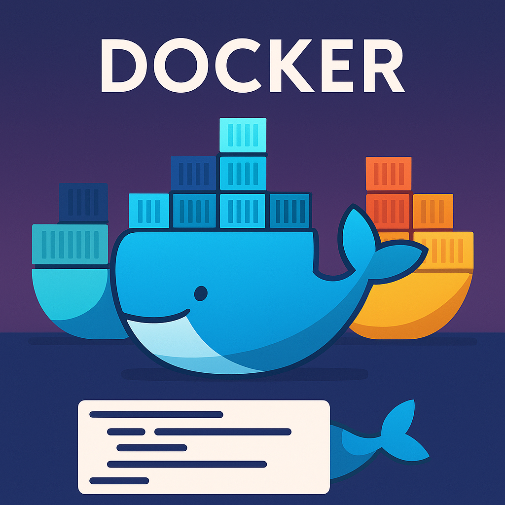

` выводит список слоёв, их размер и команду, которая их создала. Это полезно для оптимизации Dockerfile.
` выводит список слоёв, их размер и команду, которая их создала. Это полезно для оптимизации Dockerfile.100 вопросов Docker
1.100 вопросов со собеседований по Docker с подробными ответами

Docker используют все, но на собеседованиях валятся даже сеньоры.
Мы собрали 100 реальных вопросов, которые задают на интервью — от базовых до неожиданных. С пояснениями, примерами и подводными камнями.
t.me/DevopsDocker Наш телеграм канал, где о Docker можно узнать абсолютно все.
Поехали!
1. Что такое Docker и зачем он нужен?
Docker — это платформа для контейнеризации, которая позволяет упаковать приложение и все его зависимости в единый контейнер. Контейнеры изолируют приложение от хост‑системы, что упрощает переносимость между средами, развертывание и масштабирование.
2. Чем отличается Docker‑контейнер от виртуальной машины?
Виртуальные машины запускают целую гостевую ОС поверх гипервизора, что требует значительных ресурсов. Docker‑контейнеры используют ядро хост‑системы и изолируют процессы уровня ОС, поэтому они работают быстрее и потребляют меньше ресурсов.
3. Опишите архитектуру Docker
Docker состоит из клиента и сервера (демона). Клиент (`docker`) отправляет команды демону (`dockerd`), который управляет контейнерами. Образы хранятся в реестрах (Docker Hub, частные реестры).
4. Как создать и запустить контейнер из образа?
Для запуска контейнера используйте команду `docker run`, которая загружает образ (если его нет локально), создаёт контейнер и запускает процесс.
docker run --name mycontainer -d nginx:latest
5. Что такое образ и чем он отличается от контейнера?
Образ — это неизменяемый шаблон (слои файловой системы), используемый для создания контейнеров. Контейнер — это запущенный экземпляр образа с собственным состоянием и процессами.
6. Как создать Docker‑образ из Dockerfile?
Используйте команду `docker build`. В Dockerfile определяется базовый образ, копирование файлов, установка зависимостей и команда запуска.
# Dockerfile
FROM python:3.10-slim
WORKDIR /app
COPY . .
RUN pip install -r requirements.txt
CMD ["python", "app.py"]
7. Что такое volume и bind mount?
Volume — это управляемый Docker‑механизм для постоянного хранения данных; он хранится в каталоге Docker. Bind mount позволяет подключить директорию хоста в контейнер. Для обоих вариантов используется флаг `-v`.
8. Какие типы сетей поддерживает Docker?
Docker поддерживает драйверы `bridge` (по умолчанию), `host`, `none`, `overlay`, `macvlan` и другие. Сети позволяют контейнерам обмениваться данными друг с другом и с внешним миром.
9. Что такое Docker Compose?
Docker Compose — инструмент для определения и запуска многоконтейнерных приложений. В файле `docker-compose.yml` описываются сервисы, их образы, сети и тома.
version: '3'
services:
web:
build: .
ports:
- "8080:80"
db:
image: postgres:15
volumes:
- db_data:/var/lib/postgresql/data
volumes:
db_data:
10. Как добавить тег и отправить образ в Docker Hub?
Используйте `docker tag` для присвоения тега образу, затем `docker push` для отправки его в репозиторий. Перед отправкой необходимо выполнить `docker login`.
docker tag myimage:latest username/myimage:v1.0
docker push username/myimage:v1.0
11. В чем разница между `docker inspect` и `docker ps`?
`docker ps` выводит список запущенных контейнеров и их состояние. `docker inspect` предоставляет подробную информацию об объекте (контейнере или образе) в формате JSON.
12. Что такое multi‑stage build и зачем он нужен?
Multi‑stage build позволяет создавать многоэтапные Dockerfile, где промежуточные слои отбрасываются. Это уменьшает размер конечного образа и обеспечивает чистую среду выполнения.
FROM golang:1.20 AS builder
WORKDIR /app
COPY . .
RUN go build -o myapp
FROM alpine:latest
COPY --from=builder /app/myapp /usr/local/bin/myapp
ENTRYPOINT ["/usr/local/bin/myapp"]
13. Как оптимизировать размер Docker‑образа?
Используйте лёгкие базовые образы (например, Alpine), объединяйте команды `RUN` для уменьшения количества слоёв, удаляйте временные файлы и очищайте кэш пакетного менеджера.
14. Как работает `docker system prune`?
Команда `docker system prune` удаляет остановленные контейнеры, неиспользуемые образы, тома и сети. С флагом `–volumes` также удаляются неиспользуемые тома. Используйте осторожно, чтобы не потерять данные.
15. Что такое лог драйверы Docker?
Docker поддерживает разные драйверы логирования: `json-file` (по умолчанию), `syslog`, `journald`, `gelf`, `fluentd`, `awslogs` и др. Выбор зависит от используемой системы мониторинга.
16. Какие существуют способы передачи секретов в контейнеры?
Секреты можно передавать через переменные окружения, монтируемые файлы, Docker Secrets (в Swarm) и менеджеры секретов (HashiCorp Vault, AWS Secrets Manager).
17. Как обновить контейнер до новой версии образа?
Запустите новый контейнер из обновлённого образа и перенаправьте трафик. В Compose используйте `docker compose pull` и `docker compose up -d` для обновления сервисов без простоев.
18. Что такое Docker Swarm?
Docker Swarm — встроенная система оркестрации, которая превращает набор хостов в единый кластер. Swarm управляет масштабированием, балансировкой нагрузки, обновлением сервисов и безопасностью.
19. Как ограничить ресурсы контейнера (CPU, память)?
При запуске контейнера используйте флаги `–cpus`, `–memory` и `–memory-swap` для ограничения процессорного времени и памяти. Например: `docker run –cpus=1.5 –memory=512m nginx`.
20. Что такое .dockerignore и как его использовать?
.dockerignore исключает файлы и директории при сборке образа (по аналогии с `.gitignore`). Это уменьшает контекст сборки и ускоряет процесс.
21. Как подключить контейнер к нескольким сетям?
Контейнер может быть подключён к дополнительной сети командой `docker network connect `. В Compose укажите несколько сетей в секции `networks`.
22. Чем отличается ENTRYPOINT от CMD?
CMD задаёт команду по умолчанию, которую можно переопределить при запуске. ENTRYPOINT делает команду неизменяемой, а параметры передаются через CMD или аргументы `docker run`.
23. Как посмотреть логи контейнера?
Используйте команду `docker logs ` для просмотра стандартного вывода и ошибок. Опции `-f` для потока реального времени и `–tail` для ограничения выводимых строк.
24. Что такое именованные тома и зачем они нужны?
Именованные тома позволяют сохранять данные вне жизненного цикла контейнера. Они полезны для хранения баз данных, кэшей и других данных, которые должны переживать перезапуск контейнера.
25. Как посмотреть запущенные контейнеры?
Используйте команду `docker ps` для отображения запущенных контейнеров. С флагом `-a` будут показаны все, включая остановленные.
26. Как подключить том (volume) к контейнеру?
Для подключения тома используйте флаг `-v`. Например: `docker run -v myvolume:/data busybox`. Можно также смонтировать директорию хоста: `-v /host/path:/data`.
27. Чем отличается команда `ADD` от `COPY` в Dockerfile?
`COPY` просто копирует файлы и папки из контекста сборки. `ADD` умеет распаковывать tar‑архивы и загружать файлы из URL, поэтому его следует использовать осторожно.
28. Что такое контекст сборки?
Контекст сборки — набор файлов, передаваемых демону Docker при сборке образа. Он задаётся последним параметром команды `docker build`. Файл `.dockerignore` позволяет исключить ненужные файлы.
29. Как задать переменные окружения в Dockerfile?
Используйте директиву `ENV KEY=value` для задания переменных окружения. Они будут доступны во время сборки и в запущенном контейнере.
30. Как передать переменные окружения при запуске контейнера?
Передавайте переменные через `-e KEY=value` или с помощью файла переменных (`–env-file env.list`). Это позволяет параметризовать поведение приложения.
31. Как удалить контейнер и его тома?
Сначала остановите контейнер (`docker stop `), затем удалите его (`docker rm -v `). Флаг `-v` гарантирует удаление связанных томов.
32. Что такое port mapping и как он работает?
Port mapping пробрасывает порты контейнера на хост: `-p хостПорт:портКонтейнера`. Это позволяет доступ извне. Можно указать протокол через `–protocol`.
33. Как подключиться к работающему контейнеру?
Для запуска команд внутри работающего контейнера используйте `docker exec -it /bin/bash`. Это откроет интерактивную сессию.
34. Как работает здоровье контейнера (HEALTHCHECK)?
Инструкция `HEALTHCHECK` в Dockerfile указывает команду, которая периодически выполняется в контейнере. Статус (`healthy` или `unhealthy`) позволяет оркестраторам перезапускать неисправные контейнеры.
35. Как использовать Docker Secrets?
В Swarm создайте секрет командой `docker secret create`, затем подключите его к сервису через `–secret`. Секреты монтируются как файлы в `/run/secrets`. Их нельзя прочитать через API.
36. Что такое overlay network?
Overlay сеть объединяет контейнеры на разных хостах в одну виртуальную сеть. В Swarm создайте её через `docker network create –driver overlay mynet` и подключайте сервисы.
37. Что такое BuildKit?
BuildKit — это механизм сборки нового поколения. Он поддерживает параллельные сборки, более эффективное кэширование и секректы во время сборки. Включается переменной `DOCKER_BUILDKIT=1`.
38. Как сканировать образы Docker на уязвимости?
Используйте `docker scan` (основан на Snyk), либо внешние утилиты вроде Trivy. Они анализируют пакеты и сообщают о известных уязвимостях.
39. Зачем использовать флаг `–rm`?
Флаг `–rm` автоматически удаляет контейнер после завершения его процесса, что предотвращает накопление остановленных контейнеров.
40. Как перезапустить контейнер автоматически?
При запуске укажите `–restart=always` или `–restart=on-failure`. Это гарантирует перезапуск контейнера при сбое. В Compose это задаётся параметром `restart:`.
41. Как настроить пользовательские DNS‑серверы в контейнере?
Укажите DNS-сервера флагом `–dns` при запуске (`docker run –dns 8.8.8.8 –dns 8.8.4.4`). Для постоянной настройки добавьте `”dns”: [“8.8.8.8”, “8.8.4.4”]` в `daemon.json`.
42. Что такое tmpfs и как его использовать?
tmpfs монтирует временную файловую систему в оперативную память. Монтируйте с помощью `–tmpfs /path` для данных, которые не должны сохраняться на диск.
43. Как управлять версиями API Docker?
Версию API можно выбрать через переменную окружения `DOCKER_API_VERSION` или флаг `–api-version`. Это важно для совместимости старых клиентов с новым демоном.
44. Чем отличается Swarm от Kubernetes?
Swarm проще в эксплуатации и интегрирован в Docker, но меньше функциональности. Kubernetes обладает большим набором возможностей и развитой экосистемой, но сложнее в настройке.
45. Как импортировать и экспортировать контейнеры?
`docker export` создаёт tar‑архив файловой системы контейнера. `docker import` создаёт образ из такого архива. Состояние слоёв при этом теряется.
46. Для чего используется `docker save` и `docker load`?
Эти команды экспортируют и импортируют образы с сохранением истории слоёв. `docker save` создаёт tar‑файл, а `docker load` восстанавливает образы на другой машине.
47. Как работает кэширование слоёв при сборке?
Docker кеширует результаты инструкций. При изменении одного шага все последующие выполняются заново. Группируйте часто изменяемые шаги ниже, чтобы лучше использовать кэш.
48. Что такое docker context?
Context определяет удалённый или локальный демон, к которому обращается CLI. Создайте контекст `docker context create` и переключайтесь `docker context use`.
49. Как работает docker registry?
Регистры хранят образы и предоставляют API для операций `push` и `pull`. Они могут быть публичными (Docker Hub) или приватными (Harbor, GitLab).
50. Зачем нужна команда `docker login`?
Она аутентифицирует вас в реестре. Без входа вы сможете скачивать только публичные образы и не сможете отправлять приватные.
51. Что такое docker layer?
Каждая инструкция Dockerfile создаёт слой. Слои объединяются в образ. Слои кэшируются и распространяются через реестр, что ускоряет загрузку.
52. Как изменить пользователя в контейнере?
В Dockerfile используйте `USER` для смены пользователя. При запуске можно задать пользователя через `-u uid:gid`, чтобы процессы имели нужные права.
53. Как создать пользовательскую сеть bridge?
Команда `docker network create –driver bridge mynet` создаёт отдельную сеть. Контейнеры в ней могут общаться по имени, не конфликтуя с другими сетями.
54. Что такое Docker Desktop и зачем он нужен?
Docker Desktop — это набор инструментов для Windows и macOS, включающий Docker Engine, CLI, Compose и графический интерфейс. Упрощает установку и управление.
55. Как перезапустить контейнер вручную?
Используйте `docker restart ` для перезапуска. Это сочетает остановку и запуск. Можно использовать `stop` и `start` отдельно.
56. Что такое docker stats?
`docker stats` отображает загрузку CPU, использование памяти, сетевой трафик и диск I/O для каждого контейнера в реальном времени.
57. Как работает docker cp?
Команда `docker cp` копирует файлы между контейнером и хостом. Синтаксис: `docker cp :/path/in/container /host/path` и наоборот.
58. Чем отличается detach mode (`-d`) от foreground?
При запуске с `-d` контейнер работает в фоне, а CLI возвращает управление. В режиме foreground вывод контейнера отображается в терминале до его завершения.
59. Что такое docker attach?
`docker attach` подключает ваш терминал к стандартному вводу/выводу запущенного контейнера. Можно отсоединиться через `Ctrl+P` `Ctrl+Q` без остановки контейнера.
60. Как удалить все остановленные контейнеры одним действием?
Используйте `docker container prune` — команда спросит подтверждение и удалит все остановленные контейнеры.
61. Как настроить монтирование конфигурационных файлов?
Монтируйте отдельные файлы: `-v /host/my.cnf:/etc/mysql/my.cnf:ro`. Это позволяет хранить конфигурации вне образа и менять их без пересборки.
62. Как посмотреть слои образа?
`docker history ` выводит список слоёв, их размер и команду, которая их создала. Это полезно для оптимизации Dockerfile.
63. Что такое доверенные сборки (Docker Content Trust)?
Docker Content Trust добавляет подписи к образам. Включите его переменной `DOCKER_CONTENT_TRUST=1` для проверки подлинности образов.
64. Как использовать docker exec для выполнения команд?
`docker exec` запускает команду в уже запущенном контейнере. Это удобнее, чем `attach`, когда нужно выполнить разовую команду.
65. Можно ли изменять запущенный контейнер?
Вы можете установить пакеты или изменить файлы, но эти изменения живут только в слое контейнера. Для сохранения создайте новый образ командой `docker commit`.
66. Как очистить dangling images?
dangling images — слои без тегов. Удаляйте их командой `docker image prune`, чтобы освободить место.
67. Что такое docker context use?
`docker context use` переключает CLI на другой контекст (другой демон Docker). Это удобно при работе с несколькими серверами.
68. Как установить соединение между контейнером и базой данных на хосте?
Используйте адрес хоста и проброшенный порт в строке подключения. На Windows и MacOS можно использовать `host.docker.internal` как адрес хоста.
69. Что такое UID/GID и как их использовать в контейнерах?
UID (User ID) и GID (Group ID) идентифицируют пользователя и группу. Запускайте контейнер под нужным UID/GID (`-u 1000:1000`), чтобы избежать проблем с правами на монтируемом диске.
70. Как ограничить число перезапусков контейнера при ошибке?
`–restart=on-failure:5` перезапустит контейнер не более 5 раз при неудачном завершении. После превышения лимита контейнер останется остановленным.
71. Для чего используется docker network prune?
Команда `docker network prune` удаляет неиспользуемые сети. Это помогает поддерживать порядок и освобождать ресурсы.
72. Как задать рабочую директорию в Dockerfile?
`WORKDIR /app` задаёт рабочую директорию. Все последующие инструкции `RUN`, `CMD`, `ENTRYPOINT`, `COPY` и `ADD` будут выполняться относительно неё.
73. Как передать аргументы сборки в Dockerfile?
Определите `ARG NAME` и передайте значение через `docker build –build-arg NAME=value`. Аргументы существуют только во время сборки.
74. Как использовать HEALTHCHECK в Dockerfile?
Инструкция `HEALTHCHECK CMD ` задаёт команду проверки. Если она завершается с ненулевым кодом, Docker помечает контейнер как unhealthy.
75. Что такое docker export и docker import?
`docker export` сохраняет файловую систему контейнера без истории в tar-файл. `docker import` создаёт новый образ из такого файла.
76. Как включить или отключить IP forwarding в контейнере?
IP forwarding регулируется на уровне хоста через `sysctl net.ipv4.ip_forward=1`. В контейнерах обычно не управляется отдельно.
77. Что такое rootless Docker?
Rootless Docker позволяет запускать демон и контейнеры без прав суперпользователя. Это повышает безопасность, но может ограничивать доступ к сетевым функциям.
78. Как перенаправить логи контейнера в syslog?
Установите драйвер `–log-driver=syslog` и опциональные параметры (`–log-opt syslog-address=tcp://host:514`). Дальше контейнерные логи будут отправляться в syslog.
79. Зачем использовать `COPY –chown`?
`COPY –chown=user:group` устанавливает владельца файлов при копировании и предотвращает необходимость выполнять `chown` в отдельной инструкции.
80. Как управлять версиями образов?
Используйте понятные теги (например, `1.0.0`, `1.0.1`). Избегайте использования только `latest` в зависимости, чтобы точно контролировать версию.
81. Что такое защищённый реестр (private registry)?
Это локальный или облачный реестр, доступный только авторизованным пользователям. Он позволяет хранить приватные образы и управлять доступом.
82. Как настроить прокси для Docker?
Добавьте переменные `HTTP_PROXY` и `HTTPS_PROXY` в `/etc/systemd/system/docker.service.d/proxy.conf`, затем перезапустите Docker. Это позволит контейнерам использовать прокси.
83. Для чего используется LABEL в Dockerfile?
`LABEL` добавляет метаданные (например, автора, описание, ссылки) к образу. Эти данные можно просматривать через `docker inspect`.
84. Как обновить базовый образ в Dockerfile?
Периодически проверяйте наличие обновлений базового образа. Обновите строку `FROM` и пересоберите образ, чтобы получить последние улучшения и патчи.
85. Как использовать docker-compose.override.yml?
Файл `docker-compose.override.yml` автоматически применяется поверх основного файла. Его используют для локальных настроек (например, монтирование исходного кода) без изменения базовой конфигурации.
86. Что такое init-процесс в контейнере?
Init-процесс (PID 1) отвечает за обработку сигналов и перезапуск дочерних процессов. Использование легковесных init‑процессов (`tini`) помогает избежать зомби‑процессов.
87. Как передать SSH‑ключи в контейнер?
Никогда не помещайте ключи в образ. Смонтируйте каталог `.ssh` как volume (`-v ~/.ssh:/root/.ssh:ro`) или используйте секректы для сборки.
88. Что делает docker-compose down?
`docker compose down` останавливает все сервисы, удаляет созданные контейнеры, сети и, при указании `–volumes`, связанные тома. Используется для очистки окружения.
89. Как отобразить проброшенные порты контейнера?
Команда `docker port ` покажет соответствие между портами внутри контейнера и портами на хосте.
90. Для чего используется docker image prune?
Эта команда удаляет неиспользуемые образы (те, к которым нет контейнеров). С флагом `-a` удаляются и dangling и незатегированные образы.
91. Как работает docker history?
`docker history` выводит слои образа, размер каждого слоя и команды, которыми они были созданы. Помогает понять структуру и оптимизировать Dockerfile.
92. Что такое альпийский образ (Alpine) и когда его использовать?
Alpine — минималистичный дистрибутив на базе musl и BusyBox. Он уменьшает размер образов, но некоторые библиотеки могут требовать настройки или отсутствовать.
93. Как использовать Docker для CI/CD?
Контейнеры обеспечивают воспроизводимые окружения для тестов и сборок. Поднимая в контейнере нужные зависимости, вы получаете одинаковые результаты на разных машинах.
94. Как безопасно хранить зависимости в образе?
Указывайте фиксированные версии пакетов, проверяйте контрольные суммы, используйте минимально необходимые пакеты и удаляйте кеши после установки.
95. Чем отличается слой кэша сборки от слоя контейнера?
Слои кэша — это результаты команд в Dockerfile, сохраняющиеся в образе. Контейнерный слой записывает изменения в runtime и удаляется при удалении контейнера.
96. Что такое проблема PID 1?
Процесс PID 1 не обрабатывает сигналы по умолчанию, что может привести к накоплению зомби‑процессов. Использование init-процесса (например, `tini`) решает эту проблему.
97. Как изменить количество реплик сервиса в Swarm?
Команда `docker service scale myservice=5` увеличит число реплик до пяти. Это позволяет горизонтально масштабировать приложение.
98. Как управлять версией Docker Compose файла?
Поле `version` определяет формат Compose. Современные версии Docker автоматически выбирают подходящий формат, поэтому параметр `version` можно опустить.
99. Что такое rootfs в Docker?
rootfs — совокупность слоёв, формирующая файловую систему образа. При запуске контейнера поверх rootfs создаётся writable слой.
100. Как включить автоматическое удаление контейнера после завершения?
Флаг `–rm` в `docker run` гарантирует, что контейнер будет удалён после завершения процесса.